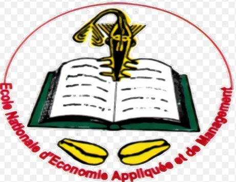

BIENVENU SUR MON SITE!
I-ETAT CIVIL
Informations personnelles
Nom: DJIDOHOKPIN
Prenoms: Hope Mindy Oluwatobi
Age: 17ans
Sexe: Feminin
Diplomes: CEP,BEPC,BAC

Voici une photo
II-DESCRIPTION
Je m'appelle DJIDOHOKPIN Mindy et je suis née le 26 Novembre 2007.Je suis actuellement étudiante en licence1 en informatique de gestion à l'ENEAM.Ceci est mon premier test ,et je suis heureuse d'écrire ma première page web.J'ai eu le BAC D en 2024. Ce n'était pas une chose facile mais je me suis bien ensortie. De base, je devrais etre en faculté de médecine parce que mon père le désirait. Il voulait que je suive ses pas mais cela s'est passé autrement. Ma note en biologie me disqualifiait déjà donc j'ai opté pour le numérique. Meme si je n'ai pas encore développé une véritable passion pour cette filière,je garde l'espoir qu'au fil du temps, l'intéret viendra avec la pratique. Je suis curieuse d'apprendre, de comprendre le monde numérique et de la programmation.Mon objectif est de progresser étape par étape afin d'etre plus tard une très bonne informaticienne compétente.